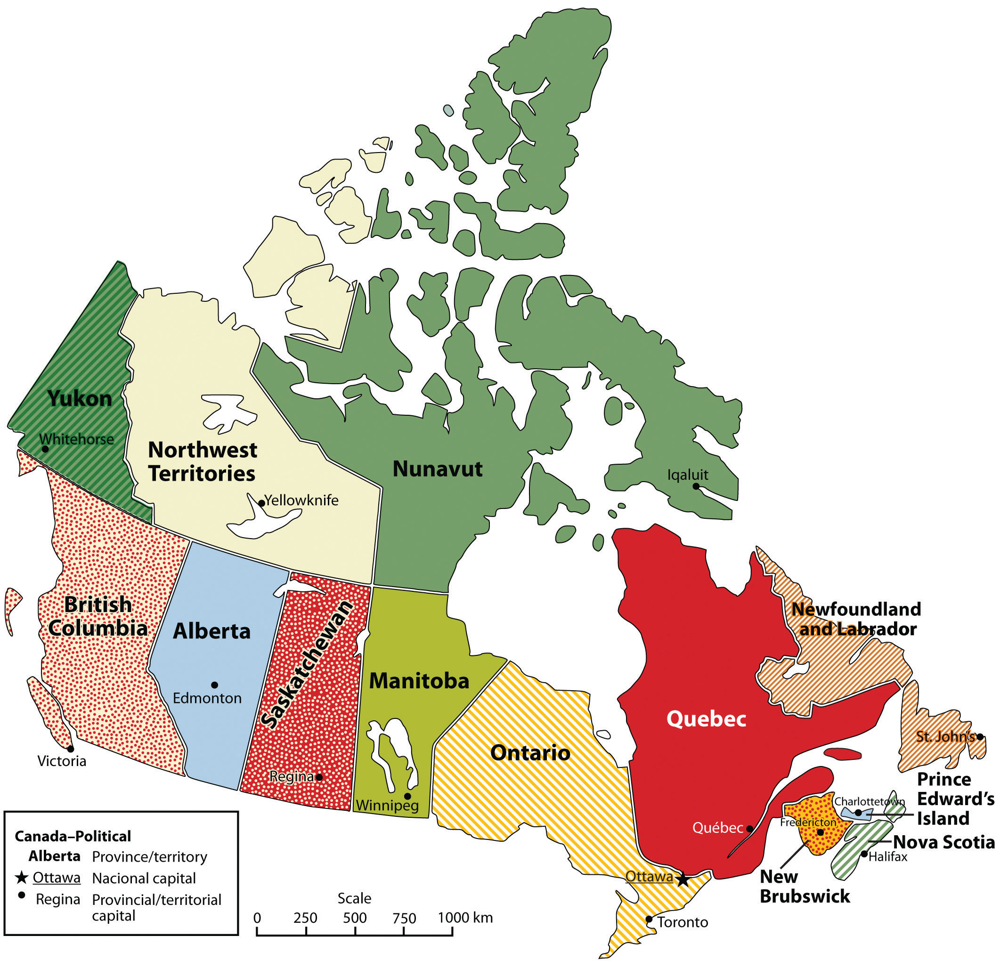
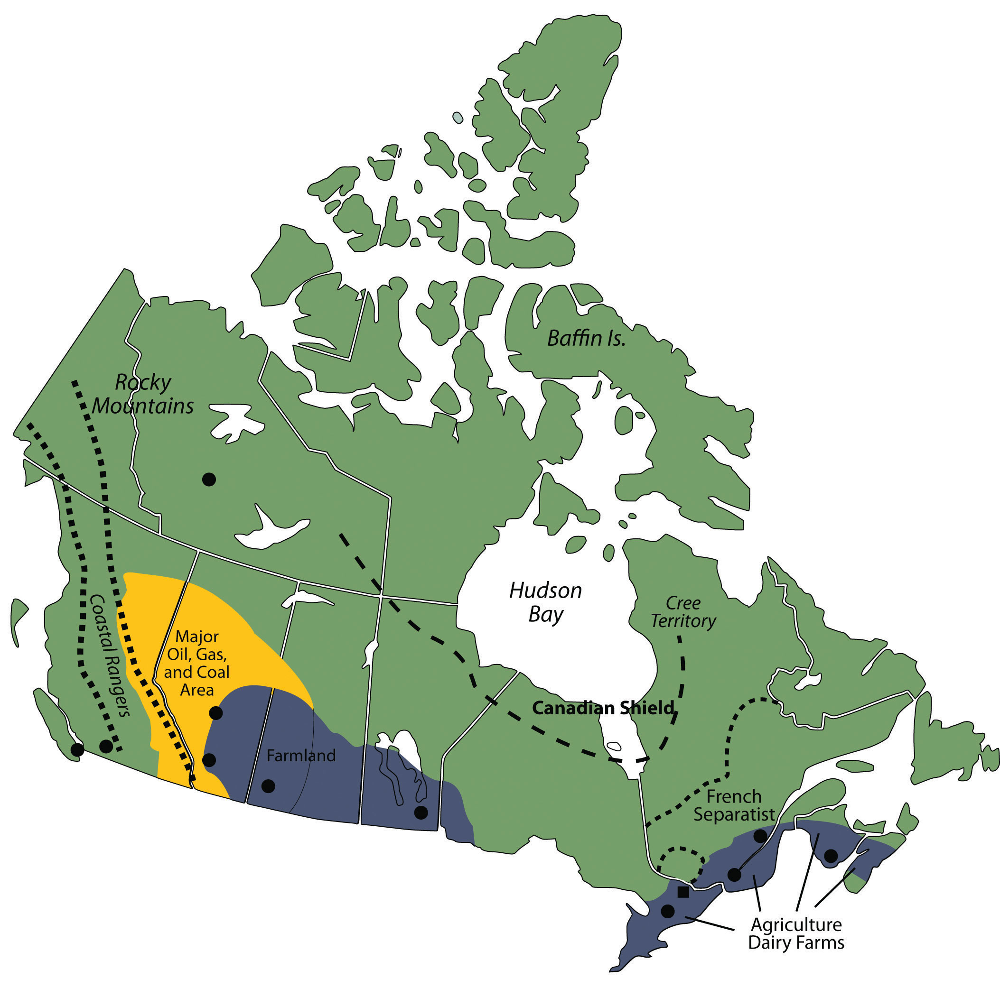
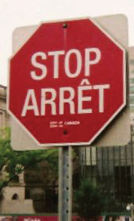
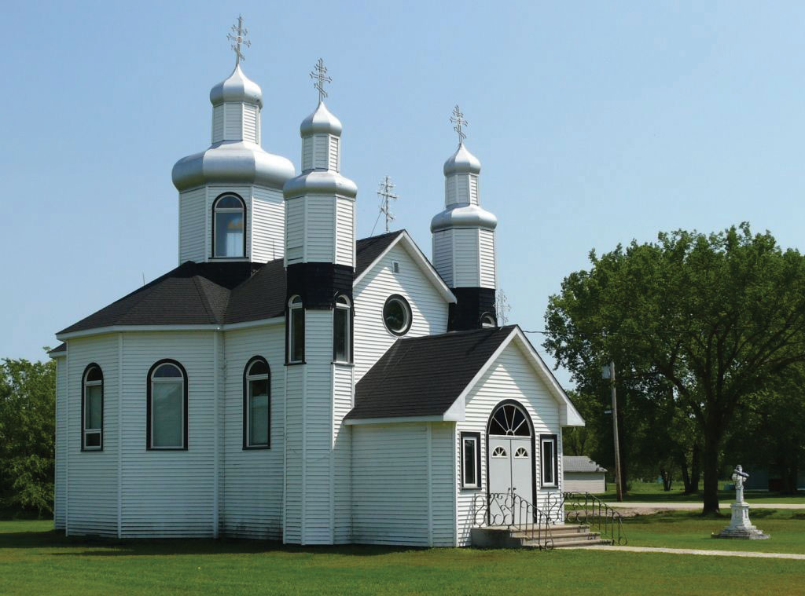

Figure 4.20 Map of Canada
Source: Map courtesy of E Pluribus Anthony, http://commons.wikimedia.org/wiki/File:Political_map_of_Canada.png.
Canada’s democratic state shares a similar developmental history and economic status with the United States. As of 2011, Canada had a population of just over thirty-four million (2011), which is less than the population of California. Canada is larger than the United States, making it the second-largest country in the world. However, despite this vast territory for a relatively small population, more than 90 percent of Canadians live within 150 miles of the US border. Northern Canada is not considered part of Canada’s ecumeneHabitable zone for permanent human settlement., or habitable zone, for permanent human settlement. Only a narrow band of territory in southern and eastern Canada has the climate and physical geography suitable for agricultural production and widespread settlement. Moreover, Canada’s economy is so closely tied to that of the United States that it makes sense for people to live close to the US border.
Canada consists of ten provinces and three territories (see Table 4.3 "Canadian Provinces, Territories, and Capitals"). Ottawa is the nation’s capital, and Toronto is its largest city.
Table 4.3 Canadian Provinces, Territories, and Capitals
| Population | Province/Territory | Capital | |
|---|---|---|---|
| Maritime Provinces of the east | 2.3 million | Newfoundland | St. Johns |
| Nova Scotia | Halifax | ||
| New Brunswick | Fredericton | ||
| Prince Edward Island | Charlottetown | ||
| French Canada | 7.9 million | Quebec | Quebec (City) |
| South Canada | 13.2 million | Ontario | Toronto |
| Prairie Provinces | 6.0 million | Manitoba | Winnipeg |
| Saskatchewan | Regina | ||
| Alberta | Edmonton | ||
| Pacific Canada | 4.5 million | British Columbia | Victoria |
| Territories | About 110,000 | Yukon | Whitehorse |
| Northwest Territories | Yellowknife | ||
| Nunavut | Iqaluit |
As you can see from Table 4.3 "Canadian Provinces, Territories, and Capitals", Ontario has by far the largest population of any of Canada’s provinces, with about 39 percent of the total. Quebec, the dominantly French-speaking province, is home to about 23 percent. Almost everyone else lives in British Colombia, west of the Rocky Mountains (13 percent); in the prairies (18 percent); or along the Atlantic coast (7 percent). The wide-open areas of Canada’s far north are occupied by only one-third of 1 percent of the population.
Type D (continental) climates dominate most of central Canada, with their characteristically warm summers and cold winters, although the farther north you go, the cooler the summers are. Canada’s west coast receives the most rainfall—between eighty and one hundred inches a year—while coastal areas in the Maritime Provinces can receive up to sixty inches per year. The northern territory of Nunavut barely receives ten inches per year, usually in the form of snow. Of course, far northern Canada has an arctic type E climate, and conditions there are so harsh that only a very few people inhabit it. The cultural influence of the colder climates and the long winters on the people is evident by the sports that are enjoyed by most Canadian citizens. Ice hockey is Canada’s most prevalent sport and its most popular spectator sport. Other sports such as curling are also common in Canada.
Figure 4.21 The Canadian Curling Team during the 2006 Winter Olympics in Torino
Source: Photo courtesy of Bjarte Hetland, http://commons.wikimedia.org/wiki/File:Curling_Canada_Torino_2006.jpg.
Canada has abundant natural resources for its population. The Canadian Shield is an area of rock and forest that covers much of central Canada around the Hudson Bay. This region, and the area to the east and west of it, provides timber and minerals for Canadian industries and for export. In the Maritime Provinces of the east, the main economic activities include fishing and agriculture. Some of Canada’s best farmland is located along the St. Lawrence River and in the southern Prairie Provinces of Manitoba, Saskatchewan, and Alberta. The St. Lawrence River region includes dairy farms and agriculture, which provide food for the larger cities of the region. The province of Ontario has fertile farmland on the north and east sides of the Great Lakes. The farmland in the Prairie Provinces has much larger grain and beef operations.
Centered in the province of Alberta is a large region of fossil fuel exploration. Coal, oil, and natural gas are found there in abundance, and much of it is exported to the United States for profit. Oil is found absorbed in surface soil called tar sands and is being extracted for energy. When tar sands are heated, the oil is separated and refined for fuel. Projections are that there is more oil in the tar sands of Canada than in the underground reserves of Saudi Arabia. Natural resources have even filtered into the cultural arena: Edmonton’s professional hockey team is called the Edmonton Oilers.
Figure 4.22 Physical Features of Canada
Source: Updated from map courtesy of http://commons.wikimedia.org/wiki/File:Can_Provinces_by_GDP_per_cap.svg.
The Rocky Mountains and the coastal ranges located in western Canada provide for mining and lumber mills. Vancouver, on the coast in British Columbia, has become a major port for Canada to export and import goods to and from the Pacific Rim. The Yukon Territory, also located in the mountains, has experienced a gold rush in years past. Canada has adequate natural resources to provide for its people and gain wealth.
As explained in Section 4.1 "Introducing the Realm", French fishermen and fur traders initially colonized Canada, the British later took it from the French, and immigrants from various other countries moved there to farm and otherwise make a living. Although none of the provinces retain French names, countless cities—especially in Quebec—have French names, among them Montreal, Trois-Rivières, Charlesbourg, and Beauport.
The names of several provinces indicate the British connection: Nova Scotia means “New Scotland,” and it was so named by the British when they took over the island from the French. Prince Edward Island was named for the father of the famous nineteenth-century British queen, Victoria. You can see remnants of British colonialism in the way Canadian government is organized. Canada, like many countries of Europe, including Great Britain, is a parliamentary democracy. The monarch of the United Kingdom is still the top-ranking government official in Canada, but only as a figurehead. The queen (or king) appoints a governor general to be her (or his) representative in the Canadian federal government. Again, this is a symbolic position. There are two chambers, a House of Commons and a Senate. Members of the House of Commons are elected and are called members of Parliament (MPs). Senators are appointed to a lifelong term by the prime minister.
As of 2006, about 58 percent of Canadians spoke English as their primary language, French was the mother tongueNative language. of 22 percent, and another one-fifth of the population (20 percent) spoke a mother tongue other than English or French.“Population by Mother Tongue, by Province and Territory (2006 Census),” Statistics Canada, http://www40.statcan.ca/l01/cst01/DEMO11A-eng.htm. For most of Canada the lingua francaA second language used for communication between people who do not share a mother tongue. remains English. The French-speaking portion of Canada is a reminder of Canada’s history as a French colony. Many of today’s French speakers are descendants of those earlier French settlers. The proportion of French speakers in Canada is declining as more and more immigrants (who also have higher fertility rates than FrancophonesA native French-speaking person or group. [French speakers]) arrive from other parts of the world and as more Francophones begin using English instead of French as their primary language. The new immigrants (along with native peoples) make up the 20 percent of Canada’s population who speak neither English nor French as their native language. About 90 percent of Canadian Francophones live in Quebec, which is a center of French culture in Canada.
The separation between French Canada and British Canada goes back to colonial times. Beginning in the 1530s, the French were the first to develop fur-trading activities in the region and colonize what is present-day Canada, calling it New France. The French claimed much of the St. Lawrence River valley and the Great Lakes region, including the region that is now Ontario. When Britain began to dominate the eastern coast of North America in the 1680s, they entered into a series of wars with France. As a result of these wars, New France was eventually turned over to Britain.
Not wanting continued war with France, Britain allowed the French-dominated region to retain its land ownership system, civil laws, and Catholic faith. The Revolutionary War in 1776, which granted the United States independence from Great Britain, also pushed many people of English descent—especially those who had sided with the British during the Revolutionary War—from the United States into Canada. British North America no longer included the United States; Canada became the main British colony in North America.
Figure 4.23 Bilingual Stop Sign in Ottawa, Ontario
Source: Photo courtesy of Steven Spell, http://commons.wikimedia.org/wiki/File:Bilingualstopsign.jpg.
In an attempt to keep the peace between French and English settlers, in 1791 the British Parliament divided Quebec into Upper and Lower Canada, which later evolved into the provinces of English-speaking Ontario and French-speaking Quebec. The Maritime Provinces of the east were then separated into individual provinces.
The cultural differences between Francophone Canada and the rest of Canada have since erupted into serious political conflicts. The Francophone areas, mainly southern Quebec, argue that they are treated unfairly, since they have to learn English but the rest of the country is not required to learn French.
During the second half of the twentieth century, many people in Quebec supported a separatist movementA movement of people who wish to have greater political autonomy. that sought to break Quebec off from the rest of Canada into an independent country. In the 1980s, the separatist initiative lost in a public vote, but only by a small margin. The issue of Quebec’s sovereignty continued to be raised in the public arena. In 1998, Canada’s Supreme Court ruled that Quebec could not separate from the rest of Canada under international law but that the matter would have to be negotiated between Quebec and the rest of Canada if secession was to proceed.
French and English are the two official languages of the Canadian government as a whole, but the French people in Quebec, fearing that English was dominating the media, the Internet, and industry to such an extent that it was endangering their French culture, have declared French as the only official language of the province. To combat the encroachment of English, laws were enacted in Quebec requiring all public advertising to be in French, or if other languages are used, they must be half the size of the French letters. All businesses employing more than fifty employees are required to conduct all business in French. Immigrants who wish to be citizens of Quebec must learn French. All primary and secondary education takes place in French unless the child’s parents were educated in English elsewhere in Canada. Civil servants dubbed the “language policeSlang term for civil servants who enforce French language laws in Quebec.” monitor and enforce the French language laws. A business found to be out of compliance with the language laws could be fined or shut down. Even though the official language of Quebec is French, since the national government takes place in both English and French, some services are still available in Quebec in English.
French Canada does not include the entire province of Quebec. Northern Quebec has traditionally been native Cree territory. When the initiative for Quebec to secede from Canada was being considered, an additional initiative was presented by the Cree to separate northern Quebec from the French region of Quebec. This would have caused the French separatist region of Quebec to lose major hydroelectric dams and important mineral and timber reserves. Other regions of Quebec that did not hold a French majority would then have promoted separating from Quebec and joining Ontario.
For Quebec to remain economically competitive, they would need the northern Cree region to remain part of the province to use the resources and energy found there. They would also need the businesses currently in Quebec to stay there, although many would probably have left if Quebec had become an independent state with French as the only language. When secession was being considered, it was found that businesses that employed more than fifty employees did not want to switch over and conduct all their business in French; they were conducting all their business in English to work with the global economic community. In 1994, the North American Free Trade Agreement (NAFTA)Agreement signed by Canada, the United States, and Mexico in 1994 creating a trade bloc between the three countries. was established between Canada, the United States, and Mexico. The goal was to open up new lines of business operations between the three countries and to increase economic opportunities to better compete with the European Union and the Pacific Rim nations. What would Quebec do if it separated from Canada? Would Quebec be able to join the NAFTA agreement? What if the other NAFTA partners cut off Quebec? Quebec would have faced serious economic consequences if they had separated from Canada. A number of English-speaking businesses have already moved to Ontario, Canada’s most populous province, to avoid changing to French. It appears Quebec will remain with the rest of Canada and work out any internal cultural issues.
Figure 4.24 Skyline of Toronto, One of the Most Diverse Cities in North America

Source: Photo courtesy of Marcin Wichary, http://www.flickr.com/photos/8399025@N07/2711707979.
Of course, we cannot forget the native groups who were displaced when the Europeans arrived. About 1.2 million people who identify themselves as AboriginalNative inhabitants. live in Canada, or about 3.8 percent of the total population. They include North American Indians (also called First NationsIndigenous people of Canada other than the Inuit.), MétisPeople of Canada who descend from both First Nations and Europeans. (descendants of both Europeans and American Indians), and InuitNative peoples of the Arctic regions of Canada and other countries. (inhabitants of the far Arctic north). Of those three groups, Inuit are the smallest, with only about fifty thousand remaining. These native people represent more than six hundred recognized groups and sixty-five language dialects, although only a handful of these languages are still spoken by a large enough core of people to remain viable languages for the long term.
Countless place names in Canada, just as in the United States, derive from native words. For example, the city of Quebec is built at the original head of navigation on the St. Lawrence River. Its name comes from an Algonquin word for “where the river narrows.” The word Canada is likely derived from the St. Lawrence Iroquois word Kanata, meaning “village” or “settlement.” While the French explorer Jacques Cartier was traveling up the St. Lawrence River in 1535, the indigenous peoples directed him to a specific village, the future Quebec City, using the word Kanata. He later used Canada to refer to the general area, and European mapmakers adopted it for the entire region.
Quebec is not the only place where devolutionary forces have been dividing cultural groups in Canada. In 1999, Nunavut officially broke from the Northwest Territory to become its own territory. Nunavut has only about thirty thousand people in an area larger than any other province or territory in Canada. It comprises about one-fifth of Canada’s land area. Most of the people who had claimed the land before the Europeans arrived are Inuit. Iqaluit, the capital city of Nunavut, is on Baffin Island near Canada’s east coast.
Canada has a great deal of ethnic diversity. One measure of this is the number of languages spoken there. One source estimates that there are about 145 languages spoken in Canada, including English and French. This reflects both the rich native heritage and the history of immigration from around the world. As of 2006, the foreign-born population was 6.2 million, or nearly 20 percent of Canada’s population. There are few countries that match this level of immigration. Even the United States had only about a 12.5 percent foreign-born population in 2006. If Canada’s current immigration rates continue, by 2017 more than 22 percent of Canada’s population will be foreign born, which equals the high rate seen in the early twentieth century, during the golden age of Eastern European immigration to North America. During this period, people from all the countries of Eastern Europe immigrated to all parts of Canada.Statistics Canada, http://www.statcan.gc.ca/start-debut-eng.html.
Figure 4.25 Evidence of Eastern European Immigration
This Ukrainian Greek Orthodox Church is located in the southern region of the Prairie Province of Manitoba.
Source: Photo by R. Berglee.
The current surge of immigrants to Canada does not include many Europeans. Instead, these immigrants come from Asian countries, especially China and countries in South Asia such as India and Pakistan. If immigration patterns stay the same, by 2017 about one in five people in Canada will belong to a nonwhite minority group. According to the 2010 Canadian census, more than a million Chinese and more than a half million South Asians lived in Canada. Other groups increasing rapidly include people from the Middle East and Korea.
Not surprisingly, Canada and the Unites States are each others’ largest trading partners. More than 80 percent of Canadian exports go to the United States and 70 percent of imports to Canada come from the United States. Except for some natural-resource industries, most businesses are centered in Canadian cities to take advantage of the available labor force. Canada is rapidly moving toward a knowledge-based economy built on innovation and technology. Knowledge-intensive industries, such as biotechnology and information technology, are on the rise, and these are typically located in cities to facilitate partnering with universities and other researchers.
Although Canada is developing into a knowledge-based economy, the foundations of the Canadian economy have always been its abundant natural resources. Canada’s primary industries have traditionally been agriculture, fishing, mining, fuel/energy, and logging/forestry. Success in tapping these natural resources for their economic benefit allowed the country to double in population since 1960 while the economy has increased sevenfold. The primary industries now make up less than 10 percent of the gross domestic product (GDP). Just as in the United States, the most dramatic structural change in the economy has been the rise of the service sector, which now employs about three-quarters of all Canadians and generates over 60 percent of the GDP. Canadian manufacturing has been a strong sector of the economy with close ties to United States and multinational corporations.
Figure 4.26 Bombardier CRJ900LR Jet Liner Taking Off from Heathrow Airport in London
The CRJ jet aircraft series is manufactured in Canada.
Source: Photo courtesy of Adrian Pingstone, http://commons.wikimedia.org/wiki/File:Lufthansa_cityline_crj900lr_d-acke_takeoff_london_heathrow_arp.jpg.
Canada’s economy is tightly tied to that of the United States. One of the best examples is how the Canadian economy fluctuates depending on whether the Canadian dollar was weak or strong compared with the US dollar. For example, in 2002, one American dollar was worth about $1.60 in Canada. For many years, the American dollar was much stronger on the world market than the Canadian dollar; therefore, Canadian goods and labor were less expensive for Americans than comparable US labor and goods. During the time of the weak Canadian dollar, many film and television industries moved to Canada to film television shows and movies, as it was less expensive to do so in Canada. Many popular television shows and movies have been shot in Canada, particularly in Toronto and Vancouver.
More recently, the value of the American dollar declined against other major currencies. The Canadian dollar remained strong, which meant that goods produced in Canada became much less affordable in the United States, causing the television and film industries to move back south of the border and Canadian exports to the United States to decline. In 2007, the Canadian dollar and the US dollar reached parity for the first time in thirty years. The two currencies continue to fluctuate with market values.
As mentioned earlier, NAFTA, the 1994 trilateral agreement between Canada, the United States, and Mexico, was one of the most significant economic events in North American history. For Canada, the agreement has meant more secure, stable access to US and Mexican markets. The agreement eliminated many tariffs; opened previously protected sectors in agriculture, energy, textiles, and automotive trade; and set specific rules for trade in services such as finance, transportation, and telecommunications. Perhaps most importantly for Canada, the agreement set rules for settling trade disputes.
The United States continues to exert its powerful influence on many countries in the world, but perhaps on none so strongly as Canada. Because of the geographical proximity of the two countries and the fact that the vast majority of Canadians live very close the US border, speak English as their first language, and share a great number of cultural similarities, American trends tend to be adopted by Canadians. Canadians differentiate themselves from Americans in legal issues, laws, and health care. For example, Canada has a health care system, funded by the provinces with financial help from the federal government, that provides free services to its citizens. Canadians often point to this difference as a one of the defining elements of their culture that is different from the United States.
Canada is a great consumer of American popular culture. Canadians listen to, watch, and read tremendous quantities of American music; television and movies; and news, books, and other literature—so much so that some Canadians believed Canadian culture was in danger of being extinguished. In response to these concerns, a law was passed and a watchdog agency created so that a certain percentage of all radio and television broadcasts emanating from Canadian radio and television stations had to originate in Canada or have significant Canadian content. Others were less worried about the impact of American pop culture on Canadian culture. This segment of the Canadian population felt that Canadians have long identified themselves in contrast to Americans; therefore, consuming American books, newspapers, television shows, and movies would only give Canadian a greater basis of comparison and thus strengthen the Canadian identity and perception of Canadian culture.
Identify the following key places on a map:
Provinces and Territories
Major Cities of Canada
Locations and Features